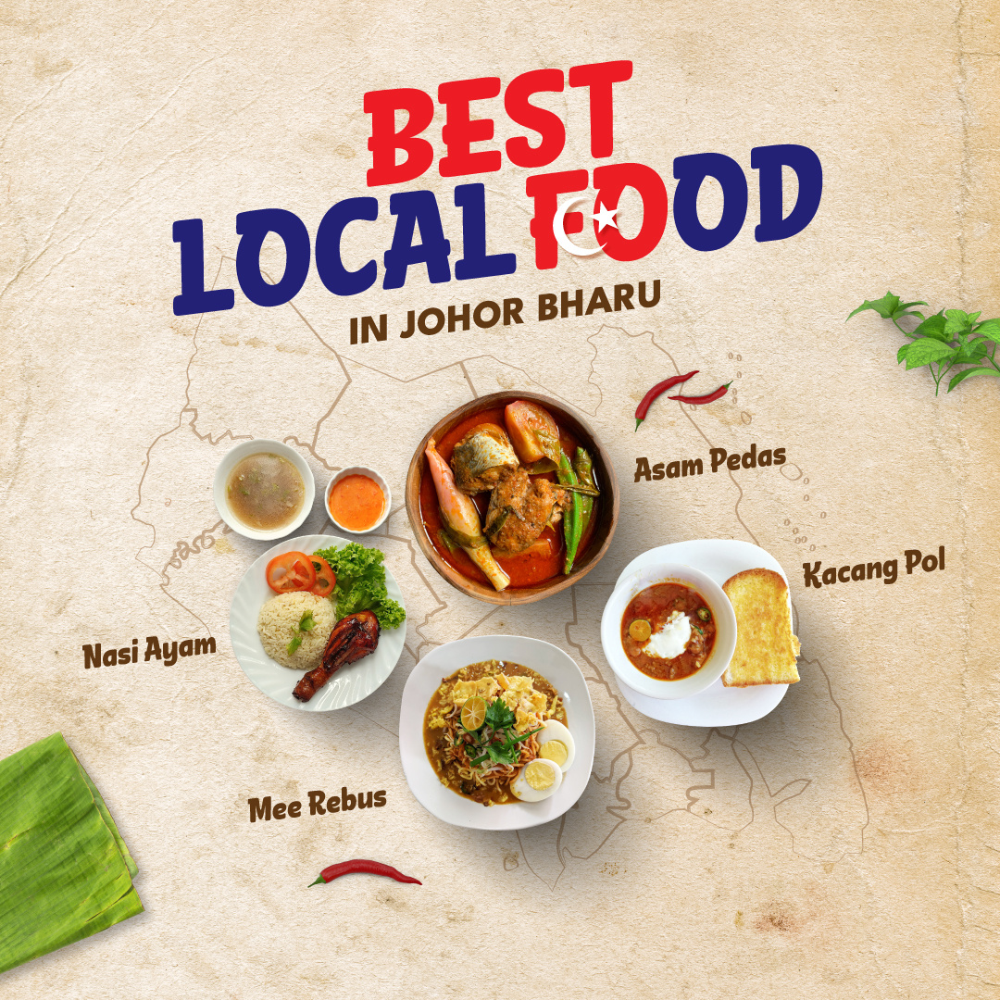
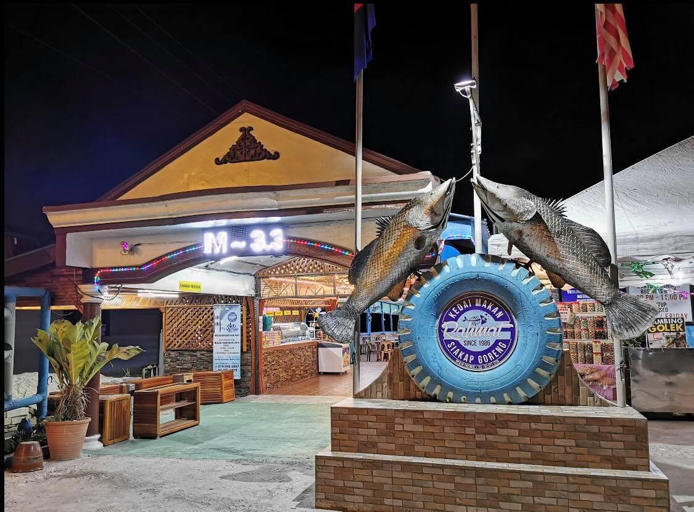

Local Food in
Johor Darul Takzim

"Kepada ALLah SWT Berserah"
Johor, officially Johor Darul Ta'zim , is a state in Malaysia located in the southern part of the Malay Peninsula . It is bordered by Pahang , Malacca , and Negeri Sembilan to the north. Johor shares maritime borders with Singapore to the south and Indonesia to the east and west.
Restoran Kacang Pool Haji

Restoran Kacang Pool Haji is known for its unique take on kacang pool, a Malaysian adaptation of the Middle Eastern foul medames. This hearty dish consists of a thick bean stew topped with a sunny-side-up egg and served with toasted bread. It's a must-try for those seeking something different yet delicious.
Mee Rebus Haji Wahid

Mee Rebus Haji Wahid, one of the most popular local dishes in Johor, is renowned for its flavorful, rich gravy and tender noodles. Garnished with boiled eggs, fried shallots, and green chilies, this dish offers a burst of flavors and textures that make it a must-try for anyone visiting Johor Bahru.
Mr. Noh Restaurant

Mr. Noh Restaurant delivers a delicious and authentic culinary experience. Indulge in a variety of mouth-watering dishes, including kari kepala ikan, asam pedas, patin tempoyak, satay, otak-otak, and many more. Renowned for its hearty Malaysian meals and comfortable ambiance, it is the perfect spot for a memorable dining experience.
Warung Pokok Ceri

Warung Pokok Ceri offers authentic Malay cuisine in a charming, laid-back setting. The menu features traditional favorites like nasi lemak, laksa Johor, and lontong kering. The nasi lemak, with its fragrant rice, spicy sambal, and crispy fried chicken, is particularly popular.
Rahmat Siakap Goreng
For a truly local experience, head to Rahmat Siakap Goreng, approximately 15 minutes away in the nearby village of Kampung Pasir. This humble eatery is famous for its fish head curry, a rich and spicy dish that draws both locals and visitors alike. The curry is made with fresh fish heads and a blend of aromatic spices that create a savory and satisfying meal.
Nasi Ayam Mama Zai

Nasi Ayam Mama Zai is known for its flavorful nasi ayam (chicken rice). The succulent roasted or steamed chicken is served with fragrant rice, accompanied by a tangy chili sauce and a side of chicken soup. It’s a simple yet satisfying meal that’s beloved by locals.